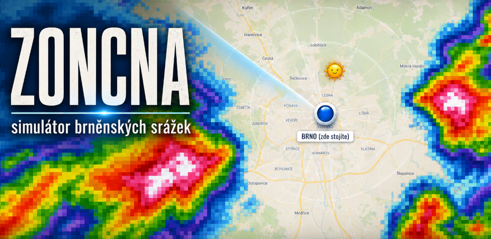
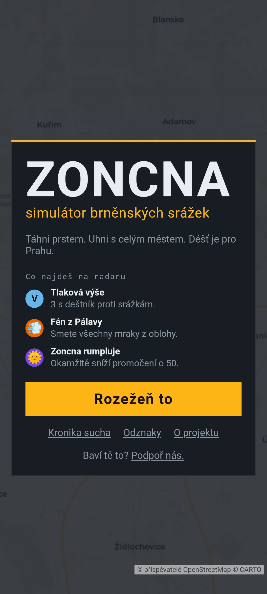
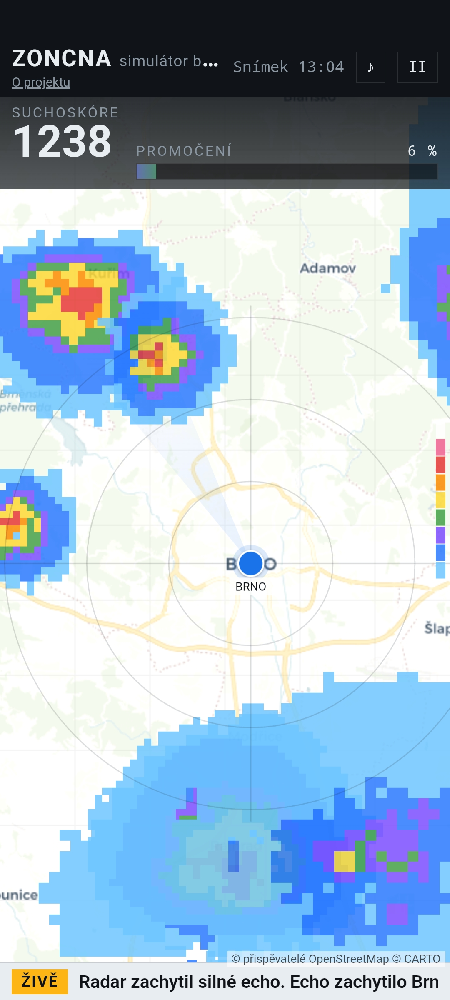

ZONCNA je ironický radar-simulátor brněnských srážek. Neovládáš mrak, ale celé město — cílem je udržet Brno v suchu, zatímco se od okrajů mapy valí barevné peklo. Čím dél vydržíš suchý, tím vyšší suchoskóre.
Přihlásit se do closed testu → nebo napiš na office@bookdragondev.com
Mapové podklady: © přispěvatelé OpenStreetMap, © CARTO
Jednoduché ovládání
Uhýbej srážkám tažením prstu nebo myši — neovládáš mrak, ale samotné město.
Čím silnější odraz zasáhne město, tím rychleji roste ukazatel promočení. Mimo déšť město pomalu vysychá.
V top 10 zadáš jméno a poměříš se s ostatními suchaři na lokálním žebříčku.
Co v tom najdeš
Živě z radaru


ZONCNA sbírá lidi do closed testu. Přihlas se přes formulář a pomoz nám hru doladit.
Vyplnit formulář →